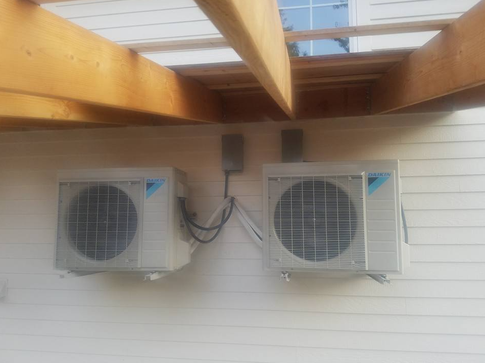

The number one mistake we see on ductless mini-split installs in the Valley — by a mile — is oversizing. A homeowner calls three shops for an estimate on cooling a 1,400 sq-ft bungalow. Two of them quote a 24,000 BTU single-zone system because that's what shows up on a spec sheet for "1,400 sq-ft." It's lazy, it's wrong, and the homeowner pays for it in comfort and efficiency for the next 15 years.
Here's how we actually do it.
1. Why sizing matters for mini-splits more than anything else
A traditional central AC is more forgiving of oversizing — it runs hard, shuts off, and the duct system evens out temperatures across the house. Mini-splits are different. They're inverter-driven, which means they modulate output continuously. The efficiency, dehumidification, and comfort benefits all come from running long and slow. Oversize a mini-split and it short-cycles: the room gets cold fast, humidity never drops, the compressor wears prematurely, and you feel that cheap on/off window-unit hum you were trying to escape.
Right-sized: quiet, dry, comfortable, 18+ SEER2 in real use.
Oversized: loud, clammy, 10 SEER2 effective, dies at year 9 instead of year 16.
2. Why the 400 BTU per sq-ft rule is wrong
The rule-of-thumb you'll find online — "30 BTU/sq-ft heating, 20 BTU/sq-ft cooling" — was calibrated for 1970s construction, single-pane windows, R-11 walls. A 1910 Walla Walla Craftsman with original cedar siding and single-pane sashes matches that pretty well. A 2019 College Place new-build with R-21 walls, Low-E windows, and a conditioned crawlspace needs half that load or less.
3. Manual J, simplified — what we actually run
Every proper install starts with a Manual J room-by-room load calculation. In practice, we're measuring:
- Wall, ceiling, and floor R-values — by inspection and a little drilling when we're unsure
- Window U-values and square footage, by orientation
- Blower-door infiltration (ACH50) when we can get it
- Internal loads — appliances, people, occupancy patterns
- Design temperature — for the Walla Walla Valley, we use 8°F heating / 97°F cooling
We run it through Wrightsoft or CoolCalc, get room-by-room loads in BTUs, and then match equipment to those numbers — not the other way around.

Historic homes vs new builds
In historic Walla Walla homes — the early 1900s Craftsmans and Victorians downtown, along Palouse Street, in the Alvarado District — we size for envelope losses first. Single-pane windows and lath-and-plaster walls dominate the load. A 2,000 sq-ft home in the old town frequently needs 30–36k BTU, split between two or three zones.
In modern College Place, Milton-Freewater, or new Walla Walla suburban construction, we size for solar gain and internal loads. Low-E windows have knocked envelope losses way down, so the afternoon kitchen and the south-facing great room dominate. A 2,400 sq-ft new-build often only needs 24–30k BTU total, but with careful zone distribution.
One head or many?
A multi-zone system (one outdoor unit, multiple indoor heads) is almost always the right answer for anything over about 1,200 sq-ft. Why?
- Better turndown. Multi-zone inverters can modulate output per zone, matching the load at every hour of the day.
- Actual temperature control per room. The bedroom can be 66°F at night without freezing the living room.
- Redundancy. If one head fails, the rest of the house still heats/cools.
We'll occasionally spec a single-head "point" install for a garage conversion or a sunroom addition — but for a whole home, almost always a multi.
If someone quotes you one 36k head for a whole 1,800 sq-ft house, walk away. It won't be comfortable in a single room of that house. — Dan, on single-head whole-home installs
Real Valley examples
Historic 1912 home, Palouse Street, 1,850 sq-ft: Mitsubishi 4-zone multi, 36,000 BTU outdoor, heads distributed to living room (12k), primary bedroom (9k), second bedroom (6k), and kitchen (9k). Runs quiet, dehumidifies well, keeps the house at 72°F even at -5°F outdoor.
2018 new-build, College Place, 2,200 sq-ft: Daikin 3-zone, 24,000 BTU outdoor. Living room (12k), primary (9k), bonus room (9k). Smaller outdoor than the smaller historic home — because the envelope is that much tighter.
Milton-Freewater 1990s ranch, 1,600 sq-ft: Ducted Mitsubishi, 30,000 BTU. We kept the existing duct runs and replaced the air handler with an inverter unit. Homeowners liked having a single thermostat, and the envelope was good enough to make it work.
What to ask your installer
Three questions to ask any HVAC shop quoting you a ductless system:
- "Can I see the Manual J printout?" If they hem, they didn't do one.
- "What design temperatures are you sizing for?" Answer should be 8°F heating, 97°F cooling for the Walla Walla Valley.
- "How will you commission refrigerant charge?" Proper answer: superheat/subcool measured at commissioning, weighed in per line-set length.